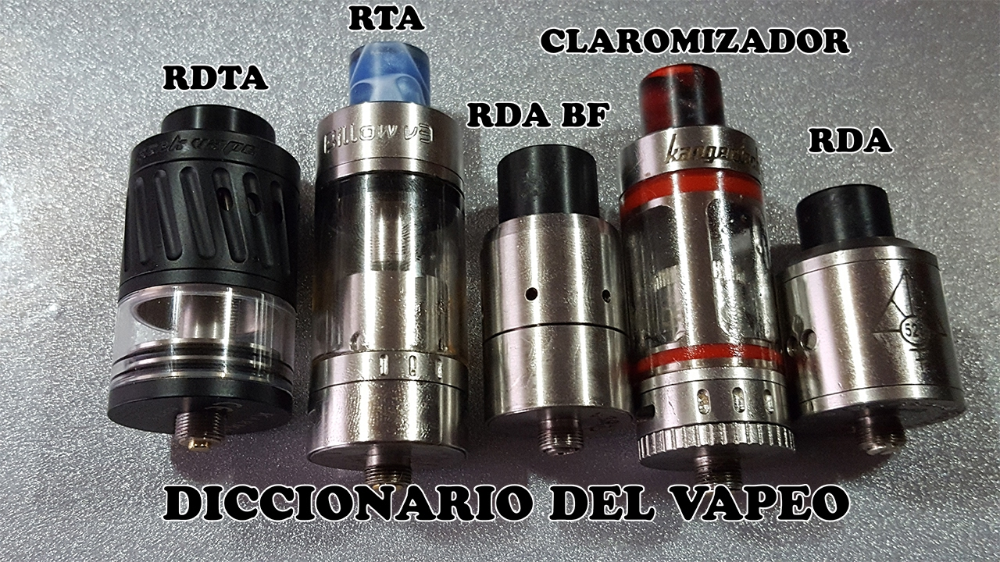
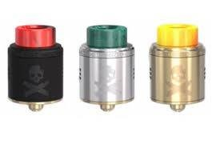
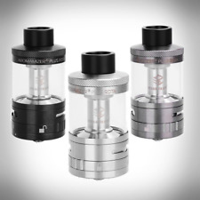

Atomizadores
Increblmente, los atomizadores pueden variar una incontable cantidad de tamaños y formas con sus respectivos voltajes,wats,oms,etc. Y estos dependen de su stock disponible para el vaporizador.
Es el depósito que contiene el e-liquid, lo calienta y lo convierte en vapor. Con el atomizador simplificamos el uso del cigarrillo electrónico, pues lo único que tenemos que hacer es enroscar el atomizador a la batería y ya podemos empezar a vapear con nuestro cigarrillo electrónico.
Los atomizadores tienen en su interior una resistencia, la misma está compuesta por uno o varios hilos de fibra de vidrio y alambre resistivo (kanthal o nicrom).
Existen 3 categorías:
-
Atomizadores desechables:
- Se desechan completamente una vez que notas una baja en la cantidad de vapor, o bien cuando empiece tomar un ligero sabor a quemado.
-
Atomizadores con resistencia intercambiable:
- Solo se desecha la resistencia, pudiendo aprovechar el depósito o tanqueta indefinidas veces, ahorrando así dinero.
-
Atomizadores reparables:
- Son completamente reparables por el mismo usuario, son mas costosos que los anteriores pero al largo plazo resultan un beneficio, el mismo se repara con hilo de fibra de vidrio y alambre kanthal o nicrom.
Atomizadores RDA (Rebuildable Dripping Atomizer)
Son los tambien llamados de DRIPEO o VAPEO EN SECO, potencian el sabor y no poseen tanque por lo que el algodón o filtro debe remojarse después de cierto numero de caladas, de lo contrario podríamos obtener un gusto a quemado. Es apropiado para realizar catas, puedes probar varios liquidos sin necesidad de cargar liquidos.RDTA o RTA (Rebuildable Dripping Tank Atomizer)
Son aquellos cuyo objetivo es potenciar el sabor, este atomizador funciona como uno de DRIPEO con el añadido que tiene TANQUE, de esta manera evitamos estar cargando constantemente el atomizador.